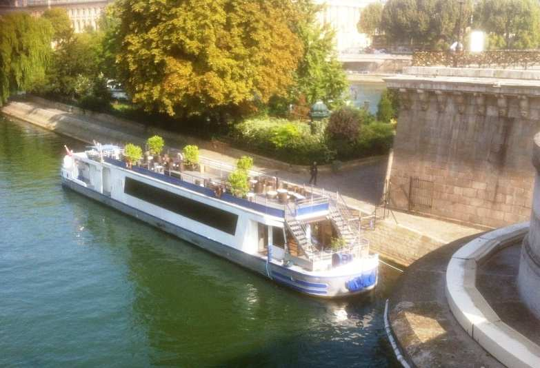

Agenda
| 19h | Accueil de nos invités avec un apéritif servi à bord. |
| 19h30 | Le bateau lève l’ancre, le dîner sera servi à bord pendant la croisière. |
| 22h30 | Retour à quai, la réception continuera avec un open bar (soft et champagne) sur le bateau. |
| Minuit | Fin de notre réception. |
Visite guidée
Notre croisière nous permettra de voir une majorité des monuments de Paris.
25 ponts
14 monuments
4 musées
Notre-Dame de Paris
La Tour Eiffel
La Statue de la Liberté *
* du pont de Grenelle
Dîner
Le dîner sera servi aux alentours de 19h30, à bord du bateau.
Le bateau
Vous profiterez de la croisière pour admirer la ville lumière depuis la Seine à bord du Théo. Le navire offre un charme indéniable avec son bois apparent et sa terrasse vous permettra de profiter d’une vue d’exception de la ville de Paris.
